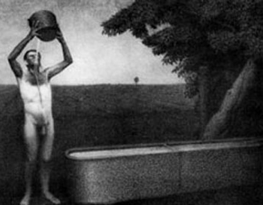

Δες με τη φαντασία σου ανθρώπους που κατοικούν μέσα σε μια σπηλιά κάτω από τη γη, που έχει την είσοδό της ψηλά στην οροφή, προς το φως. Και μέσα στη σπηλιά να είναι άνθρωποι αλυσοδεμένοι στα πόδια και στον αυχένα από την παιδική τους ηλικία, έτσι ώστε να είναι καρφωμένοι στο ίδιο σημείο και να μπορούν να βλέπουν μόνο μπροστά τους και να μην είναι σε θέση, εξαιτίας των δεσμών, να στρέφουν τα κεφάλια τους ολόγυρα. Κι οι ανταύγειες της φωτιάς που καίει πίσω τους να είναι πάνω και μακριά από αυτούς. Και ανάμεσα στη φωτιά και στους δεσμώτες, προς τα πάνω, να υπάρχει ένας δρόμος που στο πλάι του να είναι χτισμένο ένα τοιχάκι, όπως τα παραπετάσματα που τοποθετούν οι θαυματοποιοί, και πάνω απ' αυτά επιδεικνύουν τα ταχυδακτυλουργικά τους.
- Βλέπω, είπε.
Φαντάσου λοιπόν κοντά σε τούτο το τοιχάκι, ανθρώπους να μεταφέρουν αντικείμενα κάθε είδους, που προεξέχουν από το τοιχάκι, καθώς και ανδριάντες και κάποια άλλα αγάλματα ζώων, πέτρινα και ξύλινα και κατασκευασμένα με κάθε είδους υλικό, και, όπως είναι φυσικό, από αυτούς που τα μεταφέρουν άλλοι μιλούν και άλλοι μένουν σιωπηλοί.
- Παράδοξη εικόνα περιγράφεις, και παράδοξους δεσμώτες, είπε.
Μα είναι όμοιοι με μας, και πρώτα και κύρια, νομίζεις πως αυτοί έχουν δει κάτι άλλο από τους εαυτούς τους και τους υπόλοιπους που είναι μαζί, εκτός από τις σκιές που δημιουργεί η φωτιά, και των αντανακλάσεών της στους απέναντι τοίχους ;
- Μα πως είναι δυνατόν, είπε, αφού είναι αναγκασμένοι να κρατάνε ακίνητα τα κεφάλια τους εφ' όρου ζωής ;
Κι από αυτά που μεταφέρονται ; Δεν θα έχουν δει ακριβώς το ίδιο;
Τι άλλο;
Κι αν θα μπορούσαν να συνομιλούν μεταξύ τους, δεν νομίζεις πως σ' αυτά που βλέπουν θεωρούν πως αναφέρονται οι ονομασίες που δίνουν;
Αναγκαστικά.
Τι θα συνέβαινε, αν το δεσμωτήριο τους έστελνε αντίλαλο από τον απέναντι τοίχο, κάθε φορά που κάποιος από τους περαστικούς μιλούσε, νομίζεις πως θα θεωρούσαν πως αυτός που μιλάει είναι τίποτε άλλο από τη φευγαλέα σκιά;
- Μα το Δία, όχι βέβαια, είπε.
Και σε κάθε περίπτωση, αυτοί δεν θα θεωρούν τίποτα άλλο σαν αληθινό, παρά τις σκιές των αντικειμένων.
- Απόλυτα σίγουρο, είπε.
Σκέψου όμως, είπα εγώ, ποια θα μπορούσε να είναι η λύτρωσή τους και η θεραπεία τους και από τα δεσμά κι από την αφροσύνη, αν τους συνέβαιναν τα εξής : Αν κάθε φορά, δηλαδή, που θα λυνόταν κάποιος και θ' αναγκαζόταν ξαφνικά να σταθεί και να βαδίσει και να γυρίσει τον αυχένα του και να δει προς το φως, κι όλ' αυτά θα τα έκανε με μεγάλους πόνους και μέσα από τα λαμπυρίσματα δεν θα μπορούσε να διακρίνει εκείνα, που μέχρι τότε έβλεπε τις σκιές τους, τι νομίζεις πως θ' απαντούσε αυτός, αν κάποιος του έλεγε πως τότε έβλεπε φλυαρίες, ενώ τώρα είναι κάπως πιο κοντά και πως έχει στραφεί προς όντα πραγματικά και βλέπει με σωστότερο τρόπο, και αν του έδειχνε το καθένα από αυτά που περνούσαν, ρωτώντας τον τι είναι και αναγκάζοντάς τον ν' αποκριθεί, δεν νομίζεις πως αυτός θ' απορούσε και θα νόμιζε πως αυτά που έβλεπε τότε ήταν πιο αληθινά από τα τωρινά που του δείχνουν;
- Και πολύ μάλιστα, είπε.
Κι αν λοιπόν τον ανάγκαζε να βλέπει προς το ίδιο το φως, δεν θα πονούσαν τα μάτια του και δεν θα έφευγε για να ξαναγυρίσει σ' εκείνα που μπορεί να δει καλά, και δεν θα νόμιζε πως εκείνα στην πραγματικότητα είναι πιο ευκρινή από αυτά που του δείχνουν;
- Έτσι, είπε.
Και αν, τον τραβούσε κανείς με τη βία από εκεί, μέσα από ένα δρόμο κακοτράχαλο κι ανηφορικό, έξω στο φως του ήλιου, δεν θα υπέφερε τάχα και δεν θα αγανακτούσε όταν τον έπαιρναν, κι αφού θα έφτανε στο φως, δεν θα πλημμύριζαν τα μάτια του από τη λάμψη και δεν θα του ήταν αδύνατο να δει ακόμα κι ένα απ' αυτά που τώρα ονομάζονται αληθινά;
- Όχι βέβαια, δεν θα μπορούσε έτσι ξαφνικά, είπε.
Έχω την εντύπωση πως θα χρειαζόταν να συνηθίσει, αν σκοπεύει να δει τα πράγματα που είναι πάνω. Και στην αρχή θα μπορούσε πολύ εύκολα να διακρίνει καλά τις σκιές, και μετά απ' αυτό, πάνω στην επιφάνεια του νερού τα είδωλα των ανθρώπων και των άλλων πραγμάτων, και κατόπιν αυτά τα ίδια. Και μετά από αυτά, τ' αντικείμενα που είναι στον ουρανό και τον ίδιο τον ουρανό θα μπορούσε να δει ευκολότερα τη νύχτα, βλέποντας το φως των άστρων και της σελήνης, παρά στη διάρκεια της μέρας, τον ήλιο και το ηλιόφως.
- Πως όχι;
Τελευταίο θα μπορούσε νομίζω να δει τον ήλιο, όχι στην επιφάνεια του νερού ούτε σε κάποια διαφορετική θέση τα είδωλά του, αλλά θα μπορούσε να δει καλά τον ήλιο καθαυτό στο δικό του τόπο και να παρατηρήσει προσεκτικά τι είδους είναι.
- Κατ' ανάγκη, είπε.
Και μετά θα συλλογιζόταν τότε για κείνον, πως αυτός είναι που ρυθμίζει τις εποχές και τους χρόνους και που κανονίζει τα πάντα στον ορατό κόσμο, καθώς και ο αίτιος, κατά κάποιο τρόπο, όλων εκείνων που έβλεπαν αυτοί.
- Είναι φανερό, είπε, πως αυτά θα συμπεράνει ύστερα από τα προηγούμενα.
Τι λες λοιπόν; Όταν αναλογίζεται την πρώτη του κατοικία και την εκεί σοφία που είχε αυτός και οι τότε συνδεσμώτες του, δεν νομίζεις πως θα καλοτυχίζει τον εαυτό του για τούτη την αλλαγή και θα οικτίρει τους άλλους;
- Και πολύ μάλιστα.
Κι αν υπήρχαν μεταξύ τους τότε κάποιες τιμές και έπαινοι και βραβεία γι' αυτόν που θα μπορούσε να διακρίνει πιο καθαρά αυτά που περνούσαν μπροστά από τα μάτια του και γι' αυτόν που θα μπορούσε να θυμηθεί περισσότερο ποια συνήθως περνούσαν πρώτα, ποια μετά και ποια ταυτόχρονα, και έτσι θα μπορεί να προβλέπει τι θα έρθει στο μέλλον, νομίζεις πως αυτός θα κατεχόταν από σφοδρή επιθυμία και θα ζήλευε τους τιμημένους από κείνους και τους μεταξύ εκείνων κυρίαρχους ή θα είχε πάθει αυτό που λέει ο Όμηρος, και πολύ θα επιθυμούσε "να ήταν ζωντανός στη γη κι ας δούλευε για άλλον, που είναι ο φτωχότερος" και θα προτιμούσε να έχει πάθει τα πάντα, παρά να νομίζει εκείνα που νόμιζε και να ζει έτσι εκεί;
- Έτσι νομίζω τουλάχιστον, είπε, πως θα προτιμούσε να πάθει οτιδήποτε παρά να ζει έτσι.
Και τώρα βάλε στο μυαλό σου το εξής, είπα εγώ. Αν κατέβει αυτός πάλι και καθίσει στον ίδιο θρόνο, δεν θα ξαναγεμίσουν τάχα τα μάτια του σκοτάδι, αφού ήρθε ξαφνικά από τον ήλιο;
- Και πολύ μάλιστα, είπε.
Αν χρειαζόταν ν' ανταγωνιστεί με κείνους τους παντοτινούς δεσμώτες, λέγοντας την άποψή του σχετικά με τις σκιές, καθόσον χρόνο η όρασή του είναι αμβλεία, πριν προσαρμοστούν τα μάτια του, και για να συνηθίσουν δεν θα χρειαζόταν και τόσο μικρός χρόνος, άραγε δεν θα προκαλούσε περιπαιχτικά γέλια και δεν θα έλεγαν γι' αυτόν πως με το ν' ανεβεί επάνω, γύρισε με καταστραμμένα τα μάτια του και πως δεν αξίζει ούτε να προσπαθήσουν καν να πάνε επάνω; Και αυτόν που θα επιχειρήσει να τους λύσει και να τους ανεβάσει, αν τους δινόταν κάπως η ευκαιρία να τον πιάσουν και να τον σκοτώσουν, δεν θα τον σκότωναν;
Πλάτωνας, Πολιτεία, Βιβλίο Έβδομο
[download mp3: terre_thaemlitz] |